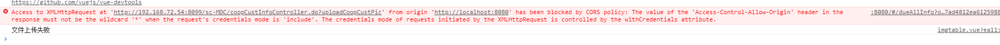
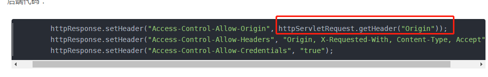
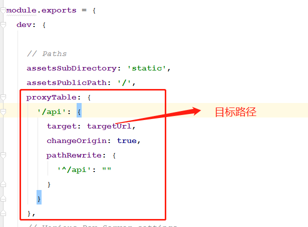
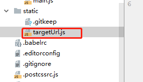
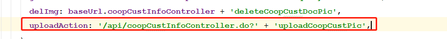

解决方法一：
1、使用elementUI框架el-upload跨域上传时，后端获取不到cookie，后端接口显示未登录，在添加了 with-credentials="true"后依然不生效

前端会报上面的错误，解决方式：后端把把*号改成httpServletRequest.getHeader("Origin")

解决方法二：（该方法还存在问题，待完善）
1、把config目录下的index.js文件打开，修改proxyTable属性的设置：

考虑到这个这个目标路径可能需要修改，所以打包后需要单独打包出来，这里我建了一个targetUrl.js，放在static文件夹下

var targetUrl = 'http://192.168.70.70:8088/sc-MDC';
module.exports = {
targetUrl
}在config目录下的index.js文件中引入
const targetUrl = require('../static/targetUrl')2、在文件上传调的接口处，修改接口地址，将之前的域名换成api
